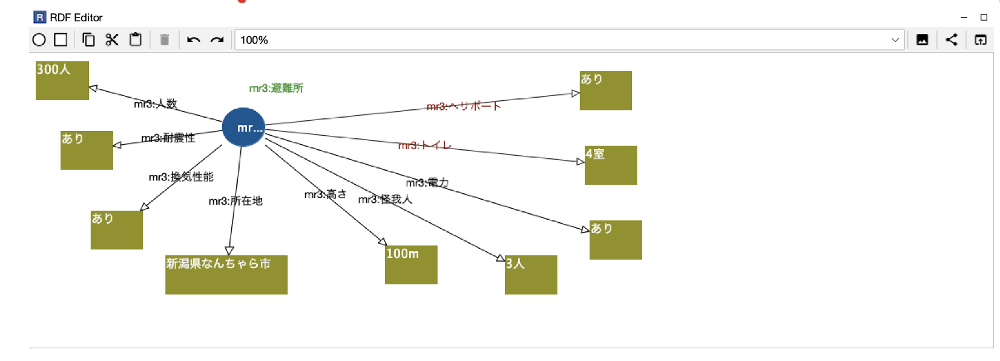
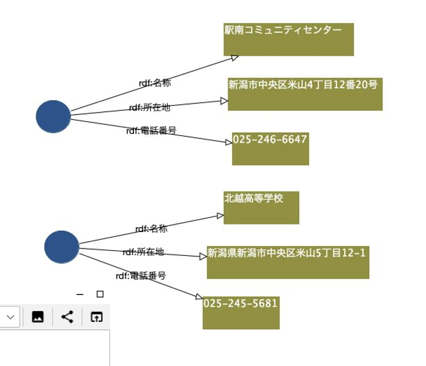

| クラス | 学籍番号 | 氏 名 |
|---|---|---|
| A | 20122077 | Roger Marvin |
AI実習2024A課題レポート(学籍番号)(学生氏名).md マークダウン記法とは？ Markdown 記法～基礎編～ マークダウン記法一覧 マークダウンの書き方
[^2]: (https://qiita.com/miriwo/items/28d80f46c857de49f34b) Markdown 記法～基礎編～ [^3]: (https://www.sejuku.net/blog/77398)マークダウン記法一覧 [^4]: (https://backlog.com/ja/blog/how-to-write-markdown/)マークダウンの書き方
<!-- 要 記述 回答 --> と記されている箇所は忘れずに適切な記述を加筆するOWL/XML Syntax 形式で、file名.owl として保存するRDF/XML Syntax 形式で、file名.owl と保存する Sparqlのクエリコードを ```sql と ``` で囲み、クエリの実行結果も ``` ``` で囲む
2 学年 4 学期のAPI 実習と同じ方法
Github のアカウントを作成し、Practice-AI-2024 という名称でプライベートリポジトリを作成
そのプライベートリポジトリに、指導員の Github アカウント= keythriveを招待する
Github のプライベートリポジトリに次の名前で、6 つフォルダを用意する：
Github のアカウント名、プライベートリポジトリ作成、6 つのフォルダをつくったか？招待を完了したか？について、FORMS アンケートするので必ず回答すること。
FORMS アンケートはこちら：
FORMS アンケートに未回答の場合、レポートを取得する方法が確立しないので、必ず回答のうえレポート提出可能な状態にすること
それぞれの提出期限までに、必要なファイル一式を当該フォルダにアップロードしておく
〆切時刻を過ぎた時点で自動的に, 全員の Github プライベートリポジトリから、git cloneなどでファイルを一括ダウンロードする
提出が遅れるとダウンロードできず、未提出と判断される
真に止むを得ない事由で、提出期限が遅れる場合、事前にメールにて連絡・相談すること:
mailto: horikawa.keitaro@kaishi-pu.ac.jp
事前連絡なしに、期限を過ぎた場合、その課題レポートは未提出として採点しない
Github のアカウント登録、プライベートリポジトリ、ファイルアップロードが不明な場合は、必ず事前に確認・相談するか、すでに出来ている友達から教えてもらうこと
| 回数 | グループ名 | 発表者 | 発表内容 | 発表への質疑・コメント |
|---|---|---|---|---|
| 1 | 有言実行 | 駒木根通元 | RDFは名称が統一されるから良いです。RDFを利用する生成AIやAIなどがより正確な答えまたはアウトプットを出せます。 | RDFを利用してAIは確かにもっと正確な答えができます。推測機能は確かにもっと強いですが、データ量が増えれば、増えるほどプロセス時間がもっとかかると思います。 |
| 1 | 点滴穿石 | 大竹博之 | RDF とはものの関係を好きな形で表現する意味です。RDF で考え方が許由しやすい。やりたいこととしては薬のデータベースを表示することです。問題と悩みは薬のデータ量が多すぎて、どうすればいいのかを悩んでいます。 | 発表は面白いで、簡単でわかります。しかし、やりたいこと（薬のこと）を言う時には、ちょっと理解でないが、うまく説明できました。 |
| 1 | 初志貫徹 | Roger Marvin | RDF の事例（Wikipedia、サーチエンジン、ゲーム「FF16」） | いいね、RDFの説明はわかりやすいの例を使って説明できました。FF16のゲームで使ったものは本当にRDFなのかは疑問です。 |
| 1 | 万里一空 | 加藤 颯士 | RDF の面白さは色なデータを RDF 化できる、一方、面白くないところは専門スキルが必要やデータや情報が矢印で表現するのは面白くないなどです。RDF 何かできるかは色な生物のデータを RDF にすること | 専門スキルが必要なのは確かに一つのハードルです。専門地意識がないと RDF を作れないのはあまりよろしくないです。もしも、専門スキルを持っている人は悪人だったら、知らない人が騙される可能性があります。 |
| 1 | 勇往邁進 | 小林相太、みそ口将太 | rdf で患者のデータ（病気のデータベース）のことです。RDF では使いやすい欲しいで、方法としては Tutorial 動画のようなものです。 | 確かに、もし練習動画があれば、誰でも RDF を作ることできるようになります。 |
| 1 | 一暴十寒 | 齋藤杏祐 | XML 比べたら、短い記述量ができます、実際にどんなものな子は Wikipedia、辞書などです。RDF をオープンで公開欲しいです。RDF で難しいことは記述する人しかい理解できない時があるので、UI の入力が簡単と標準化さひて欲しいです | 確かに、入力が記述の人しかわからないため、たまに RDF があっても、理解できないから、使いにくい場合があります。 |
| 回数 | グループ名 | 発表者 | 発表内容 | 発表への質疑・コメント |
|---|---|---|---|---|
| 2 | 有言実行 | 駒木根通元 | 情報がもっとあれば、もっと命を救える。RDF で災害の時にはどこに避難すればいいのかを判断できる。RDF でデータ入力しやすいです。アプリケーションではもしも、ただ避難情報だけではなくて、避難するときにコメントがあれば、次に災害が起こるときに、避難するときでも安心できる。 | コメントは簡単なこと思っている人多いかもしれませんが、実際に、コメントを見える、心の準備もできるし、避難する時に何を期待するのかをできます。 |
| 2 | 点滴穿石 | 大竹博之 | RDF で、事前で避難する情報が手に入れるし、災害が起こる場合には、安心で避難できる。作りたい RDF システムは現在地を中心に広がる RDF のものです。 | 確かに、事前で避難場を確認できたら、安心で避難できます。また、現在地を中心に広がる RDF で助けられます。 |
| 2 | 初志貫徹 | Roger Marvin | RDF で、短時間で多くのデータ場をアクセスでき、多くの命を救えます。RDF で具体的な例で使います。 | 確かに、具体的な例がありますが、実際にそれが使ったら、本当に命を机ますか。もしも、逃げられない際があればまたは、災害が起こるときに本当にアプリを見る暇がありますか。 |
| 2 | 万里一空 | 加藤 颯士 | RDF システムで災害の時に被害者を安全な生活をでき、被害者を支援こともできます。RDF で使った情報は基本情報はもちろん、特別な情報はペットがいれるかどうかや高齢者を耐える人数。RDF でするなら、予測を立てやすいとリアルタイムで情報を追加が可能です。 | 確かに、災害の時に、避難の情報はただ場所、電話番号などの基本な場だけではくて、ペットや高齢者などの情報も入ります。万が一ペットや特に高齢者の被害者があれば、対応できます。 |
| 2 | 勇往邁進 | 小林相太 | マッピングによって可視化が行える RDF です。簡単に情報を共有しやすいし、リアルタイムの情報を入手可能です。マイナンバーだけで避難する家族居場所を確認できます | マイナンバーを利用して、避難する被害者を確認できるのは確かに心の安全にも重要です。 |
| 2 | 一暴十寒 | 臼田誠、齋藤杏祐 | RDF で避難情報を簡単に全部みえます。また、バリアフリの多人たちにも重要です。 | 確かに、被害者はただ一般人だけではなくて、高齢者や子供や、障害者にも考えなかればなりません。 |
| 回数 | グループ名 | 発表者 | 発表内容 | 発表への質疑・コメント |
|---|---|---|---|---|
| 3 | 有言実行 | 全チーム | このチームは公開データが健全な競争に向けて弊害であると意見だしました。理由は、ある A 会社の公開データを利用するライバル B 会社がその A 会社のデータを利用して不正な行為をする可能性があるからです。そのために、健全な競争するために、データは公開することがダメです。 | デ意見が結構強いですが、デーベートの伝え方がちょっとよく無いため、説得力が低いと感じました。 |
| 3 | 点滴穿石 | 全チーム | LOD は持続に WWW の開発ができると意見だしました。その意見を強くために、復習な実際に LOD で作ってできたものを例として発表しました。例えば、E -Stat です。 | 確かに、色々な LOD のいいところの証拠を出しましたが、テーマに関して、あまり発表しなかったです。 |
| 3 | 初志貫徹 | 全チーム | LOD は持続的に WWW を開発できないという意見です。理由としては LOD は RDF を利用して、Linked Data を作ってそれを公開することですが、もしデータ量が多くなり、複雑なったら、データプロセス時間が遅くなって、効率が低くなるについて意見を出しました。もちろん、LOD はだめと言えないですが、LOD だけで持続的に WWW を開発できないです。そのため、LOD だけではなく、Data API、DataLake、Knowledge Graph と組んで、WWW を開発ことを意見だしました。 | ただ、自分のテーマをちゃんと発表し、ただ否定だけではなくて、お互いの派の意見を利用して一つの解決方法を発表出来ました。 |
| 3 | 万里一空 | 全チーム | このチームは WEB データより、ドキュメントデータの方が必要です。理由は WEB データが確かにアクセス早めできますが、データの不正の場合があるため、信頼度が低いです。ドキュメントのデータの信頼度がもっと高いため、推薦機能に使ったら、WEB データの効率より高いと発表しました。 | よかったです。ただ意見だけではなくて、数字のデータがあるため、説得力が高いです。 |
| 3 | 勇往邁進 | 全チーム | このチームはドキュメントデータより WEB データの方が必要です。理由は web データの生成がドキュメントより速いし、アクセスしやすいし、もし緊急な場合には加速でアクセスできる。例すると、災害の時にアクセスするためのデータです。 | 同じく、意見が強いですが、証拠や伝え方があまりので、説得力が低いと感じました。 |
| 3 | 一暴十寒 | 全チーム | このチームはデータには所有権があるため、データの無償公開は健全な競争社会にとって弊害であると否定します。理由は公開データがあるからこそ、相手の会社がコソコソの行為ができず、お互いの力をわか理ながら、競争できることといい剣出しました。意見に対して、復習な証拠やグラフを発表しました。 | よかったです。ただ意見だけではなくて、数字のデータがあるため、説得力が高いです。 |
この3回のチームワークは確かに難しいです。今まで関わっていないメンバーやあまり見知らないテーマを発表するのは難しいです。 しかし、今回のチームワークでは学んだことや工夫したものがいくつあります。まず、第1回の発表でのアイスブレーキがかなり重要です。 そして、発表に向けて、コミュニケーションがかなり重要です。ただ発表の話ではなくて、雑談も重要と感じました。
技術な的なことは、Protegeで作ったOWLを参考として、RDFを作りました。作ったRDFは災害の時にのRDFです。 また、自分のゲーム開発のために、簡単なゲームRDFを作りました。まだ未完成ですが、ある程度見たら、自分以外の開発者が理解できました。
以下では第2回の授業の時に作ったRDFです。 このRDFは避難場のRDFです。私たちチームが予想した・必要だと思った情報は以下の通りです。それは、収容人数、物資、電力有無、トイレ、建物の所在地、高さ、耐震性、換気性能、怪我人（医者を呼ぶための情報）、ヘリポート有無、避難時に必要な持ち物（事前準備が必要）です。 
上のRDFではまた、その地域の建物の住所や電話番号の関係で、複数な避難上のをつながる物です。 